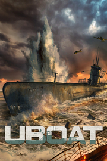

UBOAT
Detalles
|  | |
| Tiempo de juego | No Jugado |
| Última actividad | Nunca |
| Añadido | 11/13/2024 0:35:38 |
| Modificado | 11/13/2024 1:10:09 |
| Estado de finalización | No Jugado |
| Librería | Playnite |
| Fuente | PORCHE |
| Plataforma | PC (Windows) |
| Fecha de lanzamiento | |
| Puntuación de la Comunidad | 81 |
| Puntuación de la Crítica | |
| Puntuación de usuario | |
| Género | Acción Estrategia Indie Rol Simuladores |
| Desarrollador | Deep Water Studio |
| Editor | PlayWay S.A. |
| Característica | Cloud Saves Logros De Préstamo Familiar Un Jugador Workshop |
| Enlaces | Punto de encuentro Discusiones Guías Noticias Página de la tienda PCGamingWiki Logros Workshop |
| Tag | Acción Bélicos Combate naval Disparos ETR Física Gestión Históricos Marítimos Militares Modificables Mundo abierto Realistas Sandbox Segunda Guerra Mundial Simulación Submarinos Supervivencia Un jugador Valor continuo |
Descripción

UBOAT
UBOAT es un simulador de submarino de la Segunda Guerra Mundial. Es un sandbox de supervivencia con mecánica de gestión de tripulantes en el que la temática principal es la vida de los marineros alemanes. El submarino es su hogar, y podría ser su tumba en cualquier momento.
En UBOAT controlas a la tripulación que dirige el submarino. Tendrás que cuidar de su estado físico y mental, porque si tus marineros tienen hambre, están cansados y tienen la moral por los suelos, les va a costar hundir un pesquero.
Supervivencia
El completo sistema de daño es la base del elemento de supervivencia del juego. Si recibes daños, se producirán situaciones inesperadas, lo que pone a prueba la creatividad y la habilidad de mantener la calma del jugador. Puedes intentar salvar a toda la tripulación o abandonar a unos pocos para salvar al resto.

Según viajes por el mar, a menudo tendrás que apañártelas por tu cuenta. Usa tus dotes de gestión para gastar los recursos que llevas o, posiblemente, intenta reponerlos en alta mar, ya sea acudiendo a tus aliados... o saqueando los restos de tus enemigos.
- Apaga los dispositivos que no uses para que los acumuladores te duren más.
- Deja a los tripulantes en sus literas para ahorrar oxígeno.
- Si la moral de la tripulación está baja, juega una mano o dos de Skat con ellos o pon alguna emisora local de radio.
Carrera en la Kriegsmarine
Durante la partida, recibirás órdenes desde el cuartel general de la Kriegsmarine. Nunca son lineares y a menudo habrá complicaciones u órdenes adicionales.
Completar los encargos del alto mando con valor se recompensará con un aumento del presupuesto de tu unidad y de la reputación de su capitán. Te hará falta para mejorar tu submarino y hacer frente a los adelantos tecnológicos del enemigo.
- Usa los fondos que recibes para mejorar tu submarino.
- Aprovecha tu reputación para obtener permiso para más acciones.
- Compra equipo, incluyendo tipos de torpedo nuevos, señuelos de sonar, absorbentes de CO2 y más.
- Envía a tus oficiales a tareas especiales en el cuartel general, como acelerar la investigación de nuevas tecnologías.
Simulación precisa
Los elementos de simulación del juego son muy realistas, pero no a costa de la jugabilidad. A pesar de los extensos elementos de simulación del juego, es posible jugar a UBOAT como un juego normal y ya después aprender los conceptos más complejos para mejorar como capitán.El juego reproduce hasta detalles menores como la influencia del lastre de cada compartimento sobre la inclinación o la curvatura de la Tierra.
Puedes alcanzar la perfección a tu manera. Demuestra tus dotes de mando asignando tareas a tus oficiales para agilizar las cosas. Si por el contrario opinas que si quieres que algo se haga bien tienes que hacerlo personalmente, puedes.
¡Siéntate al periscopio, al hidrófono o a los mandos del calón de 88 mm y haz las cosas a tu manera!